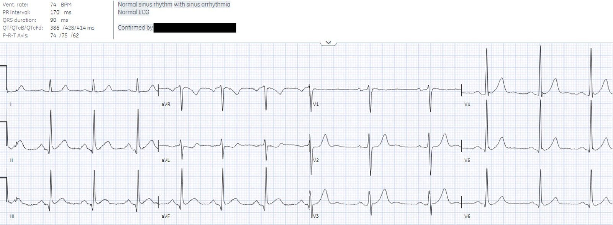
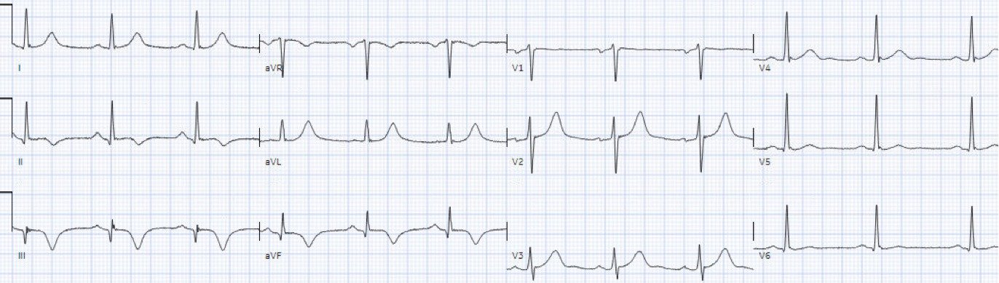
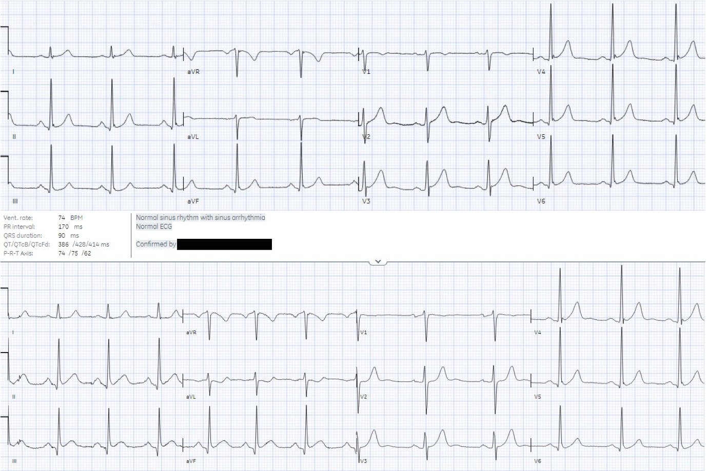
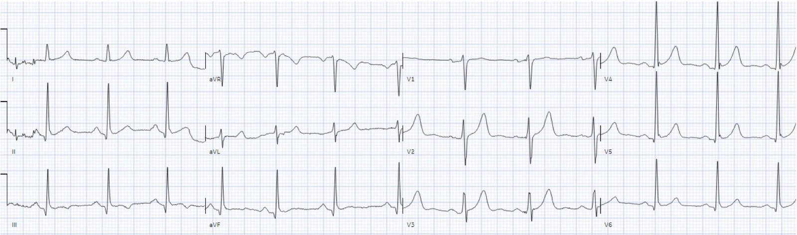
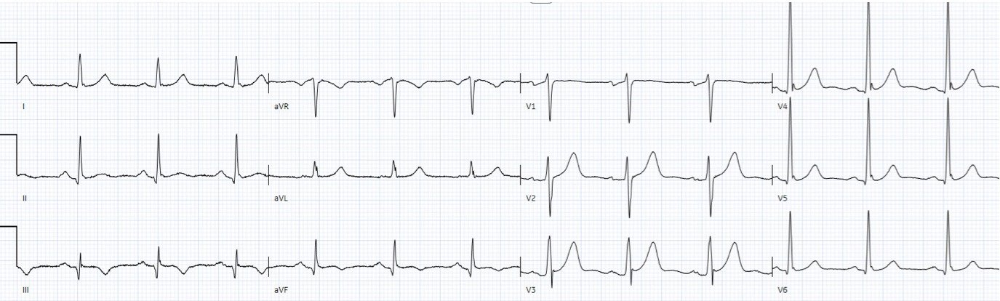
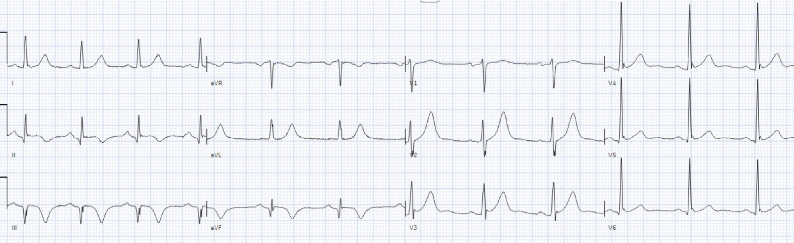
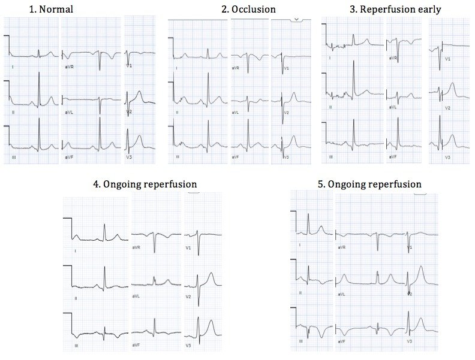
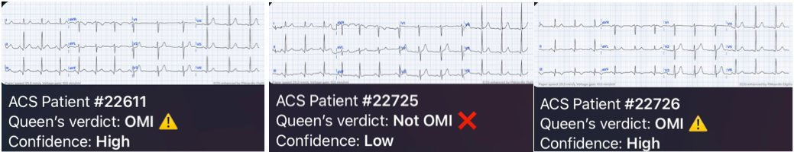
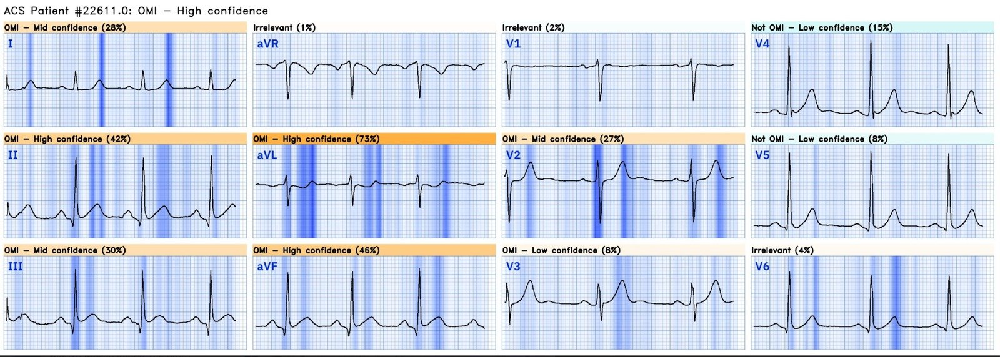
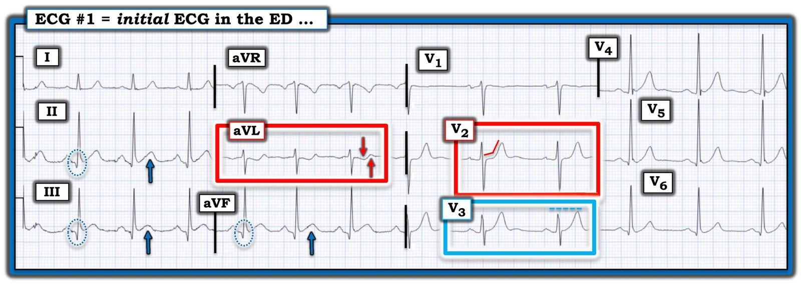

27/01/2024 — Đau ngực và điện tâm đồ “bình thường” theo máy tính. Vì vậy, không cần bác sĩ phải xem điện tâm đồ này.
Bản dịch tiếng Việt của bài "Chest pain and a computer ‘normal’ ECG. Therefore, there is no need for a physician to look at this ECG." – Dr. Smith’s ECG Blog. Giữ nguyên toàn bộ 11 hình ảnh của bản gốc.
Tác giả: Jesse McLaren, bình luận của Smith
Một bệnh nhân 55 tuổi có tiền sử
NSTEMI đến viện vì đau ngực khi gắng sức kéo dài hai giờ, dấu hiệu sinh tồn bình thường. Dưới đây
là điện tâm đồ lúc phân loại (triage), với kết quả đọc bằng máy tính (Marquette 12 SL) là “bình thường” và kết quả này
đã được bác sĩ tim mạch đọc lại xác nhận.
Bạn nghĩ gì?
Bệnh nhân này có nên tiếp tục ngồi chờ ở phòng chờ, không cần làm phiền bác sĩ đọc điện tâm đồ, vì kết quả đọc bằng máy tính là bình thường hay không?


Kết quả đọc bằng thuật toán thông thường GE/Marquette 12 SL
Smith: Bài báo này, được công bố ngay trong tháng này (!), cho chúng ta biết rằng bác sĩ chúng ta thậm chí không cần nhìn vào điện tâm đồ này cho tới khi bệnh nhân được đưa vào phòng khám, vì máy tính nói rằng nó bình thường:
Validity of Computer-interpreted “Normal” and “Otherwise Normal” ECG in Emergency Department Triage Patients (Giá trị của điện tâm đồ “bình thường” và “ngoài ra bình thường” do máy tính đọc ở bệnh nhân tại khu phân loại khoa cấp cứu)
Tôi đã phản biện bài báo này cho một tạp chí khác và đề nghị từ chối, và nó đã bị từ chối. Trong nghiên cứu này, không có bệnh nhân nào có điện tâm đồ “bình thường” mà mắc bất kỳ dạng hội chứng vành cấp (ACS) nào! Điều này đi ngược lại toàn bộ dữ liệu trước đây về nhồi máu cơ tim cấp, vốn cho thấy ngay cả troponin dưới ngưỡng phát hiện cũng không có giá trị tiên đoán âm 100%. Vì vậy, nghiên cứu này thực ra vô giá trị.
Mặt khác, nếu bác sĩ không có khả năng nhận ra OMI kín đáo, như trường hợp của bác sĩ tim mạch đọc lại, thì kết luận đó sẽ đúng.
_____________
Phân tích điện tâm đồ
Có nhịp xoang bình thường,
dẫn truyền bình thường, trục bình thường, sóng R bình thường và điện thế bình thường. Điều nổi
bật là ST chênh xuống ở aVL, soi gương (reciprocal) với ST chênh lên kín đáo ở thành dưới
và sóng T “đầy đặn”. Ngoài ra còn có sóng T dạng xuống-lên (down-up) ở aVL, khiến aVL càng có giá trị chẩn đoán hơn. Đây là hình ảnh
chẩn đoán OMI thành dưới, kèm sóng Q ở thành dưới, và đoạn ST
dẹt ở V2 có thể gợi ý lan rộng ra thành sau.
‘NSTEMI’ cũ
Tiền sử bệnh động mạch
vành và một stent ở cùng vùng cấp máu càng làm tăng khả năng tiền nghiệm
của tắc mạch vành cấp, kể cả huyết khối trong stent. Cũng có khả năng
nhồi máu thành dưới cũ đã để lại ST chênh lên tồn dư và ST chênh xuống
soi gương, vốn có thể khó phân biệt với OMI cấp.
Bệnh nhân có tiền sử ‘NSTEMI’ một thập kỷ trước, được đặt stent RCA. Điều này có làm thay đổi cách bạn đọc điện tâm đồ không?
_________
Smith: Nhồi máu thành dưới cũ với ST chênh lên tồn tại kéo dài (“phình thành dưới”) có sóng Q hình thành rõ. Trong phình thành dưới, chúng ta thường thấy sóng QR, trong khi với phình thành trước, chúng ta thấy sóng QS (hoàn toàn không có sóng R hay r!). Điện tâm đồ này có sóng Q, nhưng chúng không rộng lắm cũng không sâu lắm, vì vậy tôi nghi ngờ rằng ST chênh lên (STE) ở thành dưới là do nhồi máu cũ.
Xem các bài sau:
Chest Pain, ST Elevation, and an Elevated Troponin: Should we Activate the Cath Lab? (Đau ngực, ST chênh lên và troponin tăng: có nên kích hoạt phòng thông tim?)
Tachycardia must make you doubt an ACS or STEMI diagnosis; put it all in clinical context (Nhịp nhanh phải khiến bạn nghi ngờ chẩn đoán ACS hay STEMI; hãy đặt tất cả vào bối cảnh lâm sàng)
Pulmonary Edema, Hypertension, and ST Elevation 2 Days After Stenting for Inferior STEMI (Phù phổi, tăng huyết áp và ST chênh lên 2 ngày sau đặt stent cho STEMI thành dưới)
_________________
Có rất ít thông tin về
đợt NSTEMI một thập kỷ trước, ngoại trừ biên bản thông tim mô tả một chỗ hẹp RCA
khít đã được điều trị bằng stent, và điện tâm đồ lúc ra viện sau đây:


Bản ghi này cho thấy sóng Q thành dưới và
hình ảnh tái tưới máu dưới-sau, tương ứng với vùng cấp máu của RCA. Vì vậy đợt NSTEMI này
nhiều khả năng là một OMI STEMI âm tính (STEMI(-)OMI) với tái tưới máu muộn. Vài năm sau, các
thay đổi điện tâm đồ này đã hết, ngoại trừ sóng Q nhỏ ở thành dưới, để lại một điện tâm đồ nền gần như
bình thường. Dưới đây là điện tâm đồ nền và điện tâm đồ mới của
lần nhập viện hiện tại:


Điều này xác nhận rằng điện tâm đồ mới
thể hiện OMI dưới-sau cấp: đoạn ST ở thành dưới đã thẳng đuỗn,
làm tăng diện tích dưới đường cong của sóng T, có ST chênh xuống mới ở
aVL, dấu hiệu rất nhạy với OMI thành dưới, và có hiện tượng dẹt của
đoạn ST ở V2.
Nhưng điện tâm đồ đã bị gắn nhãn ‘bình thường’, và
bệnh nhân phải chờ được khám.
‘NSTEMI’ mới
Hai giờ sau, kết quả
troponin I đầu tiên trả về là 450 ng/L (bình thường <26 ở nam và <16 ở nữ),
khiến bệnh nhân được đánh dấu cần khám. Đến lúc này cơn đau đã tự
hết, và một điện tâm đồ khác được ghi, cũng được đọc là bình thường. Bạn
nghĩ gì?


Nếu xét riêng, điện tâm đồ này không đặc hiệu, với sóng T đảo ngược đơn độc ở
III. Nhưng so với điện tâm đồ trước, sóng T thành dưới đã “xẹp” xuống,
ST chênh xuống ở aVL đã hết, và đoạn ST ở V2 không còn dẹt nữa mà
có sóng T cao hơn. Điều này xác nhận rằng điện tâm đồ trước, lúc đang đau, thể hiện
OMI dưới-sau, và điện tâm đồ hiện tại, khi đã hết đau, thể hiện
tái tưới máu.
Như vậy
bệnh nhân đã có một đợt tắc mạch vành cấp thoáng qua, tự tái tưới máu
nhưng có nguy cơ tắc lại. Bệnh nhân được nhập viện với chẩn đoán ‘NSTEMI’, vốn
được cho là đại diện cho nhồi máu cơ tim không do tắc, nhưng sinh lý bệnh nền
lại tương tự một STEMI thoáng qua. May mắn là bệnh nhân không bị tắc lại trong khi
chờ chụp mạch vành. Điện tâm đồ ngày hôm sau cho thấy tái tưới máu đang tiếp diễn:


Chụp mạch vành phát hiện huyết khối trong stent RCA
gây hẹp 90%, tương ứng với điện tâm đồ; troponin đỉnh là 12.000 ng/L, tức một ổ nhồi máu
khá lớn; và siêu âm tim cho thấy giảm động thành dưới mới xuất hiện. Điều này
xác nhận hồi cứu chẩn đoán OMI, vậy mà bệnh nhân vẫn có chẩn đoán ra viện
là ‘NSTEMI’.
Các điện tâm đồ lúc ra viện cho thấy sóng Q
thành dưới, và giờ đây là sóng T đảo ngược tái tưới máu dưới-sau rất rõ ràng (cùng
hình ảnh như sau đợt ‘NSTEMI’ trước đây): sóng T đảo ngược (TWI) ở III/aVF kèm sóng T cao soi gương
ở aVL, và sóng T cao ở V2 soi gương với sóng T đảo ngược ở thành sau:


Dưới đây là điện tâm đồ nền (#1),
điện tâm đồ lúc tắc (#2), và các điện tâm đồ theo dõi với tái tưới máu tiến triển – từ
giai đoạn bình thường hóa ban đầu (#3) đến sóng T đảo ngược tái tưới máu tiến triển (#4-5):


STEMI so với OMI
Một nghiên cứu khác đã khẳng định rằng
các điện tâm đồ ‘bình thường’ do máy tính đọc có thể “an toàn chờ bác sĩ
đọc cho tới lúc khám bệnh nhân mà không làm chậm chẩn đoán STEMI
cấp.” (Deutch và cs. Validity of
computer-interpreted ‘normal’ or ‘otherwise normal’ ECG in emergency department
triage pateints. West J Emerg Med 2024). Họ so sánh kết quả đọc bằng máy
tính với kết quả đọc của bác sĩ tim mạch và chẩn đoán cuối cùng là STEMI, và thấy rằng máy Marquette 12 12SL có giá trị tiên đoán âm 100% đối với STEMI. Nhưng trong ca này, điện tâm đồ không đạt tiêu chuẩn
STEMI, do đó bệnh nhân không được tái tưới máu cấp cứu và không
có chẩn đoán STEMI, nên điện tâm đồ ‘bình thường’ của họ (cũng do Marquette 12 SL đọc) sẽ được coi là có giá trị
dù bệnh nhân đang bị tắc mạch vành cấp có thể thấy được trên điện tâm đồ.
May mắn là họ đã tự tái tưới máu, nếu không họ có thể đã có kết cục
xấu hơn; nhưng việc trì hoãn đọc mọi điện tâm đồ ‘bình thường’ sẽ duy trì tình trạng chậm chẩn đoán và chậm
tái tưới máu đối với OMI STEMI âm tính (STEMI(-)OMI).
Như Deutch và cs. ghi nhận trong phần
hạn chế, nghiên cứu của họ “không trực tiếp đề cập tới các kết cục khác mà
bác sĩ cấp cứu quan tâm, chẳng hạn nhồi máu cơ tim do tắc mạch vành cấp (OMI), vốn có thể
được lợi từ điều trị tái tưới máu kịp thời…Hơn nữa, ngày càng có nhiều
y văn ủng hộ một sự chuyển đổi mô hình, từ việc đánh giá điện tâm đồ theo STEMI hay không
STEMI như một chỉ dấu của OMI có thể được lợi từ tái tưới máu cấp cứu, sang
đánh giá điện tâm đồ tìm dấu hiệu OMI tắc hoàn toàn cấp (bao gồm cả OMI STEMI âm tính) so với
không phải OMI.”
Cũng chính khối y văn này đã
nêu bật những nguy cơ của điện tâm đồ ‘bình thường’ do máy tính đọc – bao gồm hàng chục
ca trên blog này và một tổng quan hồi cứu
7 năm cho thấy 4% các ca báo động STEMI (Code STEMI) dương tính thật đến viện
với điện tâm đồ bị máy tính gắn nhãn ‘bình thường’—nhiều ca trong số đó đã được
nhận ra ngay tại thời điểm thực bất chấp sự trấn an sai lầm của kết quả đọc bằng máy
tính và đã được tái tưới máu nhanh chóng. Con số 4% này là đánh giá thấp vì nó chỉ bao gồm các bệnh nhân nhập viện với chẩn đoán STEMI, không bao gồm những người nhập viện với chẩn đoán NSTEMI như ca bệnh ở trên.
Thay vì so sánh kết quả đọc bằng
máy tính thông thường với tiêu chuẩn STEMI, tiêu chuẩn vàng thực sự nên là
kết cục OMI của bệnh nhân, và khi đó AI có thể được huấn luyện để tìm các dấu hiệu kín đáo của
tắc mạch. Tôi đã gửi ba điện tâm đồ đầu tiên cho Queen of Hearts: ngay cả khi không
so sánh với điện tâm đồ nền, điện tâm đồ đầu tiên vẫn được nhận diện là OMI, điện tâm đồ thứ hai được
gọi là Không phải OMI vì nó đã bình thường hóa, và điện tâm đồ thứ ba được gọi là ‘OMI’
vì Queen hiện được huấn luyện để gán nhãn này
cho cả OMI đã tái tưới máu. Các phiên bản tương lai sẽ có thể tích hợp các điện tâm đồ liên tiếp, và phân biệt
giữa OMI và OMI đã tái tưới máu.


Hãy xem phần giải thích (explainability) cho điện tâm đồ đầu tiên đó:


Bạn có thể thấy aVL là chuyển đạo mà Queen lo ngại nhất.
Cô ấy chẩn đoán OMI với độ tin cậy cao.
Cô ấy đã đúng
Và đây lại là một điện tâm đồ mà thuật toán thông thường chẩn đoán là hoàn toàn bình thường!!
Thuật toán đó ít nhất cũng có thể đưa ra chẩn đoán “Bất thường ST-T không đặc hiệu”, nhưng nó thậm chí không làm được điều đó!!
BẠN CŨNG CÓ THỂ CÓ BOT AI PM Cardio!! (ỨNG DỤNG PM CARDIO OMI AI)
Nếu bạn muốn bot này giúp bạn chẩn đoán sớm OMI và cứu bệnh nhân cùng cơ tim của họ, bạn có thể đăng ký để nhận phiên bản beta sớm của bot tại đây.
https://share-eu1.hsforms.com/18cAH0ZK0RoiVG3RjC5dYdwfyfsg (biểu mẫu đăng ký nhận bản beta của bot PM Cardio)
Điều cần nhớ
1.
Kết quả ‘bình thường’ do máy tính đọc dựa trên
tiêu chuẩn STEMI, nên sẽ bỏ sót OMI STEMI âm tính (STEMI(-)OMI)
2.
‘NSTEMI’ không phân biệt giữa
tắc mạch, tái tưới máu có nguy cơ tắc lại, và nhồi máu cơ tim không do tắc
3.
Các hình ảnh tắc mạch và tái tưới máu có thể
học được và dạy được, kể cả dạy cho AI
4. Queen of Hearts không chỉ nhận ra điện tâm đồ “bình thường” này là không bình thường, mà còn chẩn đoán đúng OMI với độ tin cậy cao

===================================
BÌNH LUẬN CỦA TÔI, bởi KEN GRAUER, MD (27/1/2023):
===================================
Một ca bệnh được minh họa xuất sắc bởi bác sĩ Jesse McLaren — cho thấy các điện tâm đồ liên tiếp được gọi là “bình thường” và “NSTEMI” trên thực tế lại có giá trị chẩn đoán các OMI trước đây và hiện tại, bao gồm cả các hình ảnh tái tưới máu đang tiến triển.
- Xin nhấn mạnh: Ở một bệnh nhân bị đau ngực mới (CP — Chest Pain) — sơ suất gọi điện tâm đồ ban đầu trong ca hôm nay là “bình thường” — là một sai lầm không được phép mắc phải.
- Để cho rõ — tôi đã đánh dấu điện tâm đồ ban đầu này trong Hình 1.


Các phát hiện MẤU CHỐT trong bệnh sử:
Như bác sĩ McLaren đã nêu, mặc dù có tiền sử nhồi máu cơ tim trước đây — và bệnh sử lúc đến viện là đau ngực mới kéo dài 2 giờ — điện tâm đồ #1 trong Hình 1 vẫn được bác sĩ tim mạch đọc lại kết quả máy tính diễn giải là “bình thường” — và — bệnh nhân này bị để lại ở phòng chờ mà điện tâm đồ của họ không được bác sĩ khoa cấp cứu đọc ngay.
- Điểm MẤU CHỐT: Mọi bệnh nhân đến khoa cấp cứu (ED) vì đau ngực mới cần được ghi điện tâm đồ lúc phân loại (triage) ngay, và điện tâm đồ đó sau đó phải được bác sĩ cấp cứu đọc ngay lập tức. Ca hôm nay minh họa điều gì xảy ra khi quy trình này không được tuân thủ. Một bác sĩ cấp cứu có kinh nghiệm thực sự chỉ cần vài giây để đọc điện tâm đồ ban đầu của một bệnh nhân đau ngực mới.
- Các bác sĩ tim mạch được phân công đọc lại điện tâm đồ ban đầu của bệnh nhân đau ngực mới cần: i) Không để bản thân bị thiên lệch bởi kết quả của máy tính cho tới khi họ đã tự mình đọc điện tâm đồ; và, ii) Tính đến thực tế lâm sàng rằng một bệnh nhân đến khoa cấp cứu vì đau ngực mới theo định nghĩa thuộc nhóm “tỷ lệ mắc cao” với khả năng xảy ra biến cố cấp tăng đáng kể — đặc biệt nếu bệnh nhân này có tiền sử MI trước đó (như trong ca hôm nay). Do đó — ngay cả những bất thường điện tâm đồ tinh tế cũng phải được coi là cấp tính — cho tới khi được chứng minh ngược lại (điều rõ ràng đã không được làm trong ca hôm nay).
Những phát hiện MẤU CHỐT trên điện tâm đồ Ban đầu:
Ở một bệnh nhân đau ngực mới — nhân viên y tế cấp cứu cần nhận ra các dấu hiệu điện tâm đồ sau trong vòng vài giây:
- Hình dạng của sóng ST-T ở chuyển đạo V2 (bên trong hình chữ nhật MÀU ĐỎ ở chuyển đạo này). Như chúng tôi thường nhấn mạnh — bình thường đoạn ST ở các chuyển đạo V2 và V3 phải dốc lên nhẹ nhàng kèm chênh lên nhẹ. Khi đặc điểm bình thường này mất đi ở một hoặc cả hai chuyển đạo trước này ở một bệnh nhân đau ngực mới — và được thay bằng một đoạn ST đẳng điện hoặc hơi chênh xuống — cần nghĩ nhiều đến OMI thành sau cho tới khi được chứng minh ngược lại.
- Không chỉ đoạn ST ở chuyển đạo V2 của Hình 1 đẳng điện và thẳng đuỗn — mà còn có góc gập bất thường giữa đoạn ST thẳng đuỗn này và sóng T cao hơn mong đợi ở chuyển đạo V2 này. Hình dạng sóng ST-T ở chuyển đạo V2 này là một “khuôn mặt” cần được nhận ra ngay tức khắc là bất thường ở một bệnh nhân đau ngực mới.
- Xác nhận rằng sóng ST-T ở chuyển đạo V2 là bất thường — đến từ sóng T “quá đầy đặn” (hypervoluminous) rõ ràng ở chuyển đạo V3 kế cận (bên trong hình chữ nhật MÀU XANH ở chuyển đạo này — với đường chấm chấm MÀU XANH cho thấy sóng T ở V3 này thậm chí còn cao hơn sóng R ở chuyển đạo này).
Những Phát hiện Bất thường ở các Chuyển đạo Chi của Hình 1:
- Tôi đã khoanh trong hình chữ nhật MÀU ĐỎ ở chuyển đạo aVL thay đổi MẤU CHỐT ở chuyển đạo chi cần ngay lập tức thu hút sự chú ý của bạn. Ở một bệnh nhân đau ngực mới — không thể nào đoạn ST chênh xuống dốc xuống kèm sóng T hai pha ở phần cuối (xuống-lên) ở chuyển đạo này lại là bình thường (các mũi tên MÀU ĐỎ ở chuyển đạo aVL).
- Việc sóng ST-T ở chuyển đạo aVL chắc chắn bất thường — nên khiến bạn chú ý hơn tới hình dạng sóng ST-T ở các chuyển đạo dưới, vì rất thường có mối quan hệ soi gương “kỳ diệu” (đối nghịch như hình trong gương) giữa độ lệch sóng ST-T ở chuyển đạo aVL so với chuyển đạo III (cũng như ở 2 chuyển đạo dưới còn lại = chuyển đạo II và aVF).
- Trong bối cảnh này — sự “đầy lên” tinh tế-nhưng-có-thật ở đỉnh của sóng T ở các chuyển đạo dưới (các mũi tên MÀU XANH hướng lên ở các chuyển đạo này) — kèm đoạn khởi đầu ST hơi thẳng ra và gợi ý ST chênh lên tại điểm J ở các chuyển đạo II,III,aVF là bất thường cho tới khi được chứng minh ngược lại.
Các sóng Q ở các chuyển đạo dưới của Hình 1 có “ý nghĩa” không?
- Qua nhiều năm — đã có nhiều định nghĩa được đề xuất cho thế nào là một sóng Q “có ý nghĩa”, dựa trên độ rộng và/hoặc độ sâu của sóng Q. Hàm ý hiển nhiên của các định nghĩa như vậy — là NẾU một sóng Q nào đó được coi là “có ý nghĩa” vì thỏa mãn một định nghĩa dựa trên milimét nhất định — thì điều đó cho thấy nhồi máu đã xảy ra vào một thời điểm nào đó.
- Tôi cho rằng các định nghĩa như vậy dễ gây hiểu lầm vì: i) Thay vì một định nghĩa tổng quát dựa trên milimét cho “ý nghĩa” của sóng Q — có những yếu tố khác không cho phép khái quát hóa như vậy (tức là, kích thước tương đối của QRS ở chuyển đạo đang xem xét, đặt trong bối cảnh có hay không có sóng Q ở các chuyển đạo kế cận); ii) Sóng Q không nhất thiết là một dấu hiệu vĩnh viễn sau nhồi máu — ở chỗ một sóng Q từng rất lớn có thể nhỏ đi theo thời gian (và thậm chí biến mất); iii) Sự thay đổi trục và/hoặc vị trí đặt điện cực ngực không nhất quán có thể ảnh hưởng tới cả sự hiện diện lẫn kích thước của bất kỳ sóng Q nào nhìn thấy; và, iv) Góc nghiêng của giường lúc ghi điện tâm đồ cũng có thể ảnh hưởng tới việc có thấy sóng Q hay không.
- ĐIỀU CỐT LÕI: Theo ý kiến của tôi — không có định nghĩa hoàn hảo nào cho thế nào là một sóng Q “có ý nghĩa” (tức là, một sóng Q cho thấy nhồi máu đã xảy ra vào một thời điểm nào đó). Thay vào đó — đây là một nhận định định tính do người thầy thuốc có kinh nghiệm đưa ra dựa trên một loạt yếu tố. Ấn tượng ban đầu của tôi về các sóng Q ở chuyển đạo dưới trong Hình 1 (mà tôi có được trước khi xem các bản ghi trước đây của bệnh nhân hôm nay) — là các sóng Q này không “sâu” (xét đến các sóng R tương đối cao ở các chuyển đạo II,III,aVF) — nhưng các sóng Q này rộng hơn mức tôi thường mong đợi — và do đó, cung cấp thêm một đặc điểm điện tâm đồ nữa phù hợp với nhồi máu thành dưới vào một thời điểm nào đó.